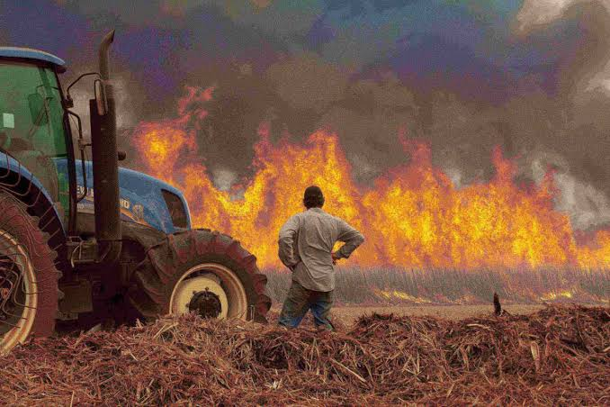
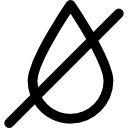
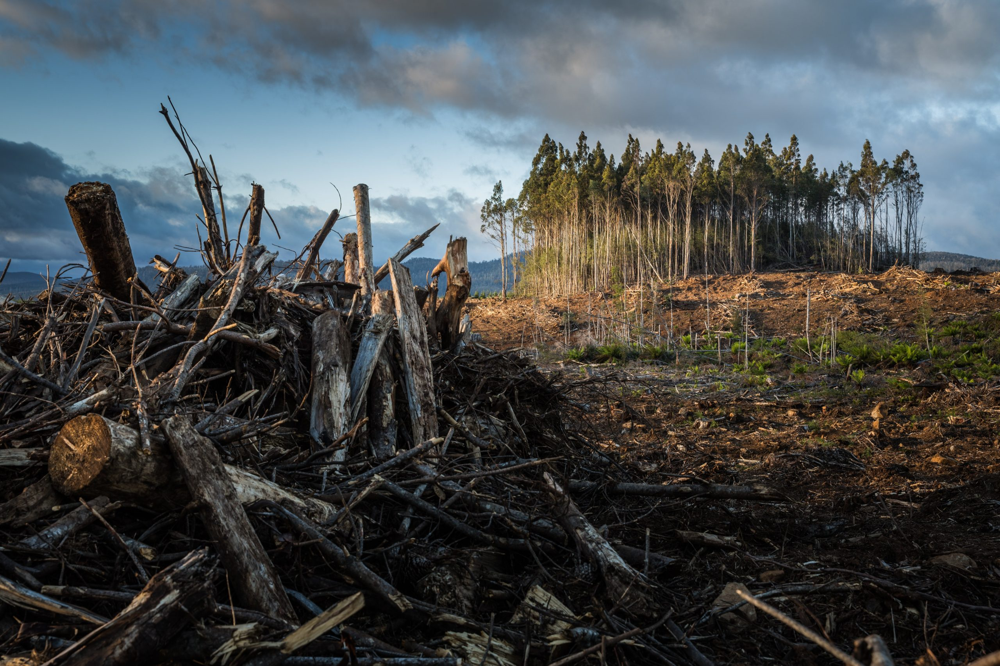

Principais Causas das Queimadas

Desmatamento
A expansão de terras agrícolas e pecuárias através da derrubada de florestas contribui significativamente para as queimadas.

Queimadas Criminosas
A prática ilegal de iniciar incêndios para desmatamento ou outros fins é uma das maiores causas de queimadas descontroladas.

Secas Prolongadas
Períodos de seca intensa criam condições ideais para o surgimento e propagação de incêndios em áreas florestais.

Agricultura de Corte e Queima
Técnicas agrícolas que utilizam o fogo para limpar terrenos contribuem significativamente para as queimadas.